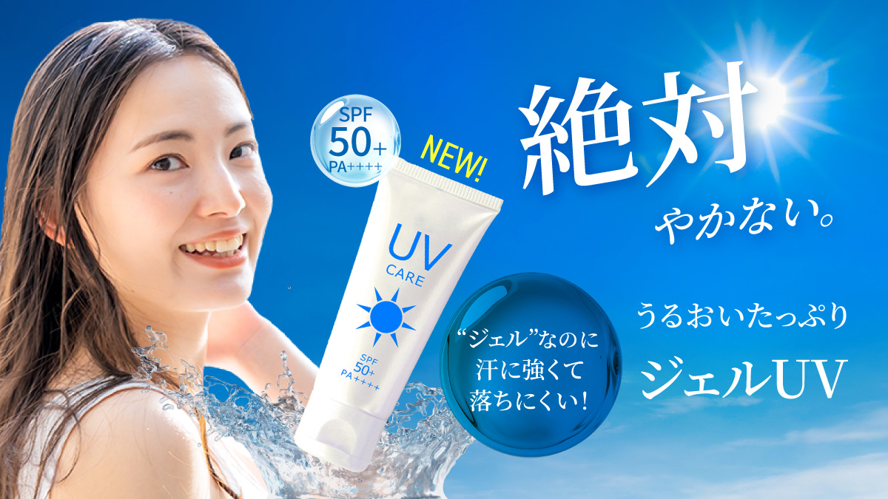

Works

日焼け止めバナー
目的:購入、認知向上
ターゲット:10～50代の女性
担当範囲:デザイン
使用ツール:Illustrator、Photoshop
サイズ:1080×1080、1200×675
制作のPOINT
青と白の配色に太陽の光を入れて夏らしさをイメージしました。
女性の肌にツヤ感を入れることで太陽の光を浴びている様子を表現しました。
ジェルの部分に質感を出してうるおい感を出してみました。